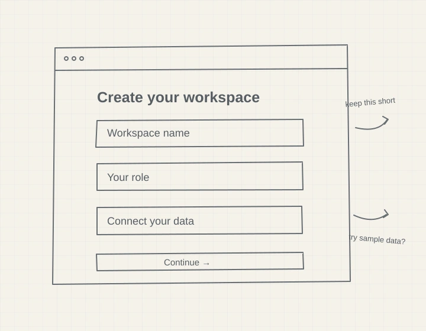

What people need first
“I wanted to see a report before I connected anything.”
Connecting a data source requires permissions and help from someone else.
▧ Usability notes
“I wanted to see a report before I connected anything.”
Connecting a data source requires permissions and help from someone else.

Make this signup flow easier to try.
I’ll review your notes, check examples, and put together a simpler flow.
Checking onboarding examples
Found a sample-report approach
Reading your usability notes
Connection is blocking first value
Waiting for the findings
Drafting a flow from both findings
Simpler flow ready
I’m bringing the findings together.
Added a simpler flow to your board. ↗
Offer a working sample report before asking people to connect their own data.
From your notesPeople want to see a useful report before doing the connection work.
From the researchSample reports offer a way to explore before bringing your own data.

Usability